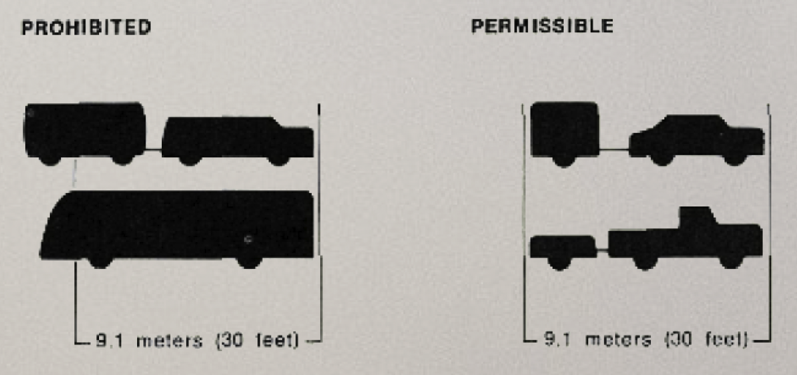
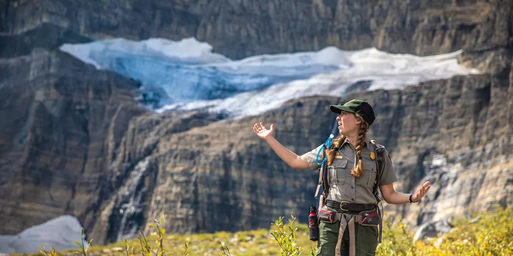

Visit Glacier
Planning a visit to Glacier National Park? Find information on accommodation, activities, food options, and important safety guidelines to help you explore the park comfortably, responsibly, and with confidence. Whether you’re here for a day or a longer adventure, a little planning goes a long way.

! Safety Precautions !
Check the safety precautions before entering the wilderness.
Wild Animals
Observe wildlife from a safe distance. Never feed animals, and store food securely to avoid attracting them. Bear spray is recommended in bear country.
Vehicles
Drive cautiously on narrow, winding roads. Watch for wildlife crossing and obey all speed limits. Always wear seatbelts and avoid distractions.
Hiking & Climbing
Stay on marked trails and let someone know your route. Carry water, a map, and emergency supplies. Check trail conditions before heading out.
Pets
Keep pets leashed at all times. Clean up after them and never leave them unattended. Pets are not allowed on some trails—check regulations.
Fire Prevention
Campfires are only allowed in designated areas. Fully extinguish fires before leaving. Observe all fire restrictions to protect the park and wildlife.
Weather
Weather can change rapidly—dress in layers and be prepared for rain, wind, or snow. Check forecasts and avoid hiking during storms or extreme temperatures.
Accommodations
Glacier National Park offers a range of accommodation options, from historic lodges inside the park to hotels and cabins in nearby towns. Whether you prefer comfort close to nature or easy access to park entrances, booking in advance is recommended, especially during peak season.


Restaurants
Dining options are available both inside the park and in surrounding communities. You’ll find everything from casual cafés to full-service restaurants serving local and seasonal dishes. Hours and availability may vary, so plan ahead, particularly outside the summer months.


Camping
Camping is a popular way to experience the park up close. Glacier has several campgrounds, ranging from reservable sites to first-come, first-served options. Campers should be prepared for changing weather, follow food storage regulations, and practice Leave No Trace principles.


Guided Ranger Tours
Join a guided ranger tour to experience Glacier National Park through the eyes of the experts who know it best. Ranger-led tours offer engaging insights into the park’s wildlife, geology, history, and fragile ecosystems, bringing the landscape to life through stories and local knowledge.
These guided experiences are designed for a wide range of ages and abilities, making them a great option for families, first-time visitors, and those looking to learn more as they explore. In addition to education, ranger tours promote safe and responsible park use, helping protect both visitors and the natural environment. Tour themes, locations, and schedules vary by season, so be sure to check current offerings during your visit.
